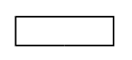
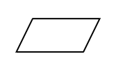
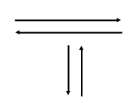

Lenguajes Algorítmicos
En el capítulo 2 describimos qué es un algoritmo, su clasificación y los lenguajes en los que podemos describirlos. Las dos herramientas utilizadas comúnmente para diseñar algoritmos son:
- el diagrama de flujo (lenguaje gráfico) y
- el pseudocódigo (lenguaje no gráfico),
los cuales describiremos en detalle en este Capítulo.
Diagrama de Flujo
Un diagrama de flujo es la representación gráfica de un algoritmo. Esta representación gráfica se da cuando varios símbolos (que indican diferentes procesos en la computadora), se relacionan entre sí mediante líneas que indican el orden en que se deben ejecutar los procesos. Los símbolos utilizados han sido normalizados por el Instituto Norteamericano de Normalización (ANSI, American National Standard Institute).
| Símbolo | Descripción |
|---|---|
Símbolo terminal  |
Indica el inicio y el final del diagrama de flujo. |
| Símbolo de expresión  |
Indica la ejecución de una expresión cuyo resultado se asigna a una variable. |
| Símbolo de entrada  |
Indica la entrada de datos del teclado. |
| Símbolo de salida |
Indica la salida de información en la pantalla o monitor. |
| Líneas de flujo o dirección  |
Indican la secuencia en que se realizan las operaciones. |
Algunas recomendaciones para el diseño de diagramas de flujo son:
- Se deben usar solamente líneas de flujo horizontales y/o verticales.
- Se debe evitar el cruce de líneas utilizando los conectores.
- No deben quedar líneas de flujo sin conectar.
- Se deben trazar los símbolos de manera que se puedan leer de arriba hacia abajo y de izquierda a derecha.
Pseudocódigo
El pseudocódigo es una mezcla de un lenguaje de programación y el español (o cualquier otro idioma). El pseudocódigo se puede definir como un lenguaje de especificación de algoritmos.
El pseudocódigo es la representación narrativa de los pasos que debe seguir un algoritmo para dar solución a un problema determinado. El pseudocódigo utiliza palabras que indican el proceso a realizar.
Algunas de las ventajas de utilizar un pseudocódigo a un diagrama de flujo son:
- Ocupa menos espacio en una hoja de papel
- Permite representar en forma fácil operaciones repetitivas complejas
- Es muy fácil pasar de pseudocódigo a un programa en algún lenguaje de programación.
La siguiente tabla resume las principales equivalencias entre los símbolos de los diagramas de flujo y el pseudocódigo.
| Símbolo | Equivalencia |
|---|---|
| Símbolo terminal | inicio o fin según sea el caso |
| Símbolo de entrada | leer |
| Símbolo de salida | escribir |
Ejercicios Propuestos
- ¿Qué es un diagrama de flujo?
- Mencione tres recomendaciones al esribir diagramas de flujo
- ¿Qué es el pseudocódigo?
- ¿Cuáles son las ventajas de usar pseudocódigo en lugar de un diagrama de flujo?